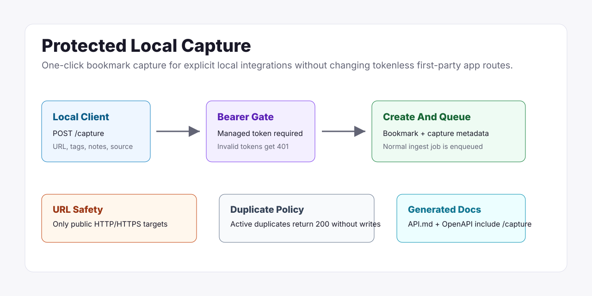

Little Imp Task Report
One Click Capture Endpoint

POST /capture while first-party bookmark routes remain unchanged.Before
Bookmark creation existed through the first-party app, normal POST /bookmarks, imports, and MCP tools. The parity task for one-click local capture was deferred until token auth, CORS/origin policy, and generated API docs were stable.
Problem
Explicit local integrations needed a single protected endpoint that can save a URL with optional title, tags, category, notes, and capture context without making the first-party app token-based or exposing a public browser-client surface.
Changes Added
- Added
POST /captureprotected by managed local integration bearer tokens. - Added append-only migration
0017_bookmark_capture_metadata.sqland a focused capture metadata repository. - Validated URL safety, payload shape, tags, category assignment, notes, source metadata, and ambiguous category fields.
- Kept active duplicate captures side-effect-free and preserved archive/trash conflict behavior.
- Regenerated
API.md,docs/api-contract.json, anddocs/openapi.jsonwith bearer security for/capture.
Result
Local clients can now deliberately capture bookmarks through a documented, bearer-protected endpoint. New captures create normal bookmarks and enqueue the same durable ingestion pipeline; duplicates return the existing active bookmark without merging replacement metadata or queueing duplicate work.
Verification
bun test src/test/integration/capture.test.tsfailed RED with404for missing/capture, then passed with 6/6 tests including the documented notes-size boundary.bun test src/test/integration/security-hardening.test.tspassed with 9/9 tests, including the endpoint-specific capture body limit.npx vitest run scripts/api-docs-generator.test.tspassed with 10/10 tests after contract updates.npm run docs:apiregenerated API docs and OpenAPI output.npm run type-check:daemonpassed after route and repository wiring.npm run checkpassed with existing lint and build warnings only.
Implementation Notes
The endpoint is intentionally separate from POST /bookmarks. Existing first-party app flows remain tokenless inside the loopback origin boundary, while /capture requires a managed integration token. Packaged browser-extension or bookmarklet clients and extension smoke tests remain future work.
Files Changed
daemon/src/routes/capture.tsdaemon/src/db/capture-repository.tsdaemon/src/db/migrations/0017_bookmark_capture_metadata.sqldaemon/src/server.tsdaemon/src/api/contract.tsdaemon/src/test/integration/capture.test.tsdaemon/src/test/integration/security-hardening.test.tsAPI.md,docs/api-contract.json,docs/openapi.jsontasks/done/TASK-105-one-click-capture-endpoint.md